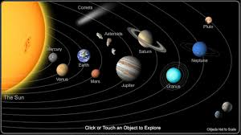

Solar System

The Solar System is the gravitationally bound system comprising the Sun and the objects that orbit it, either directly or indirectly. Of those objects that orbit the Sun directly, the largest eight are the planets, with the remainder being significantly smaller objects, such as dwarf planets and small Solar System bodies. Of the objects that orbit the Sun indirectly, the moons, two are larger than the smallest planet, Mercury.
The Solar System formed 4.6 billion years ago from the gravitational collapse of a giant interstellar molecular cloud. It includes the following planets:
- Mercury
- Venus
- Earth
- Mars
- Jupiter
- Saturn
- Uranus
- Neptune
The Solar System also contains smaller objects.The asteroid belt, which lies between the orbits of Mars and Jupiter, mostly contains objects composed, like the terrestrial planets, of rock and metal. Beyond Neptune's orbit lie the Kuiper belt and scattered disc, which are populations of trans-Neptunian objects composed mostly of ices, and beyond them a newly discovered population of sednoids. Within these populations are several dozen to possibly tens of thousands of objects large enough that they have been rounded by their own gravity. Such objects are categorized as dwarf planets. Identified dwarf planets include the asteroid Ceres and the trans-Neptunian objects Pluto and Eris. In addition to these two regions, various other small-body populations, including comets, centaurs and interplanetary dust, freely travel between regions. Six of the planets, at least four of the dwarf planets, and many of the smaller bodies are orbited by natural satellites, usually termed "moons" after the Moon. Each of the outer planets is encircled by planetary rings of dust and other small objects.
The Solar System is located in the Orion Arm, 26,000 light-years from the center of the Milky Way.